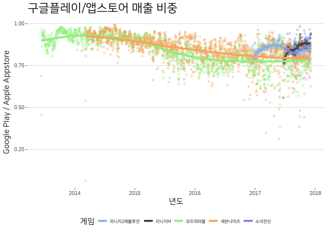
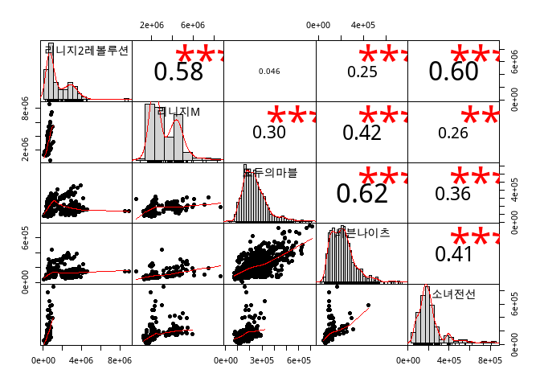
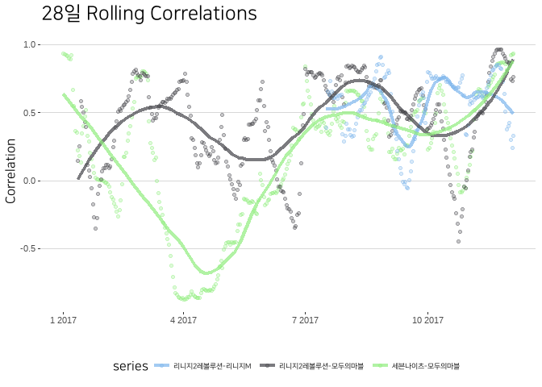
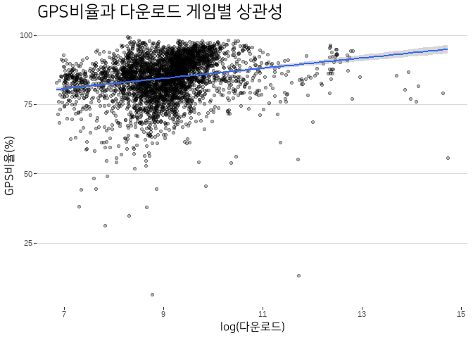
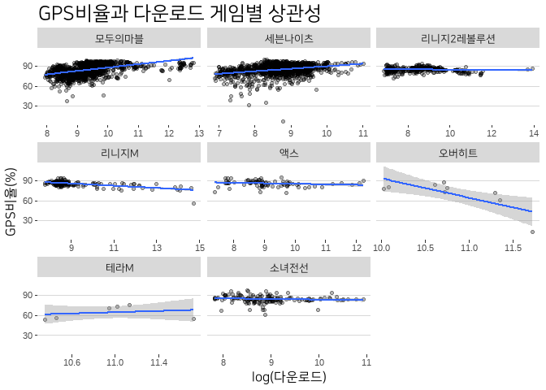

Disclaimer
“part 1”이라고 거창하게 달아 놓았지만, 파트2가 나올까? I don’t think so…
Google Play Store(GPS) vs Apple Apptore(AA)
한국은 스마트폰 보급율의 차이 만큼이나 모바일 앱 시장의 마켓 비중 역시 안드로이드로 쏠려 있다. 정확한 통계는 찾을 수 없었지만 대체적인 그림은 그릴 수 있겠다. iOS의 경우 2016년에 20% 언저리로 점유율이 상승했으나, 2017년 현재 다시 10~15% 사이로 내려온 것으로 추정된다. 앱 시장의 크기는 어떨까? 선진국 시장의 경우 iOS 이용자들의 높은 구매력 때문에 앱 시장의 크기는 OS 점유율 만큼 차이가 나지 않는 것이 보통이다. 게임 시장의 경우 이러한 현상이 두드러진다. 미국과 일본 모두 대략 5:5 혹은 6:4 정도의 비중으로 볼 수 있다. 하지만 한국의 경우에는 앱 시장의 OS 점유율 역시 OS 자체의 점유율과 비슷하다. 현재 모바일 게임 시장에서 매출의 90% 이상이 인앱결제(부분유료화)를 통해 발생하고 있고, 인앱결제를 통해 보다 자주 그리고 쉽게 지갑이 열리는 이용자 층이 안드로이드에 더 많이 포진하고 있다는 추측 정도 가능하다.
이 포스팅에서는 데이터로 다룰 수 있는 대상으로 초점을 좁혀 게임 앱 시장 및 GPS와 AA의 차이점을 다루고자 한다. 대상으로 삼은 게임 및 이 게임들의 데이터 범위는 아래와 같다.
| 게임 | 시작일 | 최종일 | 데이터 수 |
|---|---|---|---|
| 모두의마블 | 2013-06-12 | 2017-12-04 | 1636 days |
| 세븐나이츠 | 2014-03-08 | 2017-12-06 | 1369 days |
| 리니지2레볼루션 | 2016-12-16 | 2017-12-04 | 353 days |
| 리니지M | 2017-06-20 | 2017-12-04 | 167 days |
| 소녀전선 | 2017-07-02 | 2017-12-04 | 155 days |
| 액스 | 2017-09-12 | 2017-12-04 | 83 days |
| 오버히트 | 2017-11-26 | 2017-12-04 | 8 days |
| 테라M | 2017-11-29 | 2017-12-04 | 5 days |
넷마블게임즈의 롱런 게임인 “모두의마블”, “세븐나이츠”, 그리고 모바일 MMORPG 히트작 “리니지2레볼루션”, “리니지M”, 그리고 최근에 등장한 신작인 “A x E”, “오버히트”, “테라M” 모두 7개다. “오버히트”와 “테라M”은 관찰 수가 부족하여 많은 분석에서 제외될 것이다. 데이터의 출처는 업계에서 꽤 많이 찹고하는 ㅇㅇㄴ이다.1 보통 분석 내용과 함께 원데이터 및 가동한 소스코드를 공개하는 것이 원칙이다. 하지만 아쉽게도 이용한 자료를 공개할 권리가 나에는 없다. 이 점은 양해 부탁한다. 요청이 있다면 분석에 동원된 코드는 공개할 수 있다.
아래에서 탐색할 질문은 크게 다음의 세가지다.
- 7개 게임들의 GPS 점유율은 어느 정도인가?
- 게임 사이의 경합관계는 존재하는가?
- GPS의 비율이 높아지는 것이 매출을 견인하는가? 한다면 어느 정도나 하는가?
ONE: Ratio of GPS
일단, 전체적인 GPS의 비율은 다음과 같다.
| 게임 | GPS 매출비 | GPS 다운로드비 |
|---|---|---|
| 세븐나이츠 | 0.862 | 0.881 |
| 액스 | 0.857 | 0.798 |
| 모두의마블 | 0.849 | 0.876 |
| 리니지M | 0.846 | 0.798 |
| 소녀전선 | 0.844 | 0.859 |
| 리니지2레볼루션 | 0.842 | 0.808 |
| 오버히트 | 0.747 | 0.753 |
| 테라M | 0.625 | 0.754 |
“오버히트”와 “테라M”의 비율이 낮은 것은 자료의 정확성이 떨어지기 때문이다. 일단 매출 비중의 경우 대체로 85%에 가까운 매출이 GPS를 통해 발생하고 있다. 일자별로는 어떤 패턴을 보일까? “오버히트”와 “테라M”을 제외하고 그려보면 다음과 같다.

“모두의 마블”과 “세븐나이츠”와 같은 장수 게임의 경우 서비스 초반의 높은 비중에서 이제는 75% 선까지 GPS 매출비가 낮아진 상태다. 서비스 개시 후 1년 이하의 다른 인기 게임은 85%~90% 가까운 높은 비중을 유지하고 있다.
TWO: Rivary among games
보통 마켓에서 1위 게임들에 관심이 쏠린다. “\(x\)가 \(y\)를 누르고 1위를 차지했다,”" 이런 흔한 기사 제목을 떠올리면 되겠다. 이런 대중적인 인식은 게임 사이에 경합관계가 있다는 것을 암묵적으로 가정한다. “리니지M”이 “리니지2레볼루션”을 매출에서 눌렀다면, 이때 우리는 “리니지2레볼루션”의 매출과 “리니지M” 매출 간 음의 상관관계를 관찰할 수 있을까? 나머지 게임들에 대해서도 비슷한 질문을 던져볼 수 있겠다. PerformanceAnalytics 패키지에서 제공하는 chart.Coreelation 명령을 통해 탐색적인 수준에서 이 문제를 살펴보자. 데이터가 충분하지 않은 “액스”, “오버히트”, “테라M”을 제외한 결과는 아래와 같다.

위의 결과에서 보듯이 상관관계 지표에서 확인 가능한 ’경합관계’를 드러내는 게임은 없다. 오히려 게임 사이의 양의 상관관계가 두드러진다. 즉 게임 이용자는 남들이 지르는 시기에 대체로 함께 지른다. 물론 상관계수로 할 수 있는 이야기는 몹시 제한적이다.
한편 위의 상관계수는 전체기간에 대해서 단순 계산한 결과다. 위 데이터가 일 단위로 생성된다는 동태적인 측면을 고려하면, 상관계수 역시 시간이 흐르면서 함께 변할 수 있다. 이 점을 보기 위해 ’rolling correlation’을 보도록 하자. rolling correlation이란 일정 기간을 잡고 날짜를 하나씩 밀어내면서 상관계수를 그리는 것이다. 이동평균(moving average)를 생각하면 좋다.
직관을 얻는 차원이니 넷마블의 “모두의 마블”, “세븐나이츠”, 그리고 엔씨소프트의 “리니지M”에 대해 계산한 결과를 살펴보자. “리니지2레볼루션”에 대한 데이터가 안정화된 2017년 1월 1일부터 2017년 12월 4일까지를 계산 기간으로 삼았고, 게임의 매출이 요일 기준으로 많이 움직이는 점을 고려하여 28일을 상관관계의 계산 주기로 두었다.

일단 세 관계 모두 rolling corrletion의 변동성이 생각보다 컸다. 이 이슈는 별도로 다뤄볼만한 가치가 있지만 여기서는 더 이상 논하지 않겠다. rolling corrletion 간에 어떤 체계적인 경향성이 없다는 점 역시 주목해 볼만 하다. 동종 장르의 경쟁작이라고 평가되는 “리니지2레볼루션”과 리니지M“의 rolling corrletion에 일정한 변동성이 있지만, 앞서 전 기간에 대한 상관관계와 마찬가지로 경합성이 관찰되지 않았다.
THREE: High GPS ratio, high revenue?
GPS의 비율이 높다는 사실이 매출에 기여할까? 기여한다면 얼마나 기여할까? 이를 엄밀하게 밝히기 위해서는 더 많은 고민과 고통이 필요하다. 하지만 언제나 그렇듯이 야매정신에 충만한 나는 ‘까이꺼 대에충’ 해 볼 뿐이다.
| Predictors | Dependent Variables | log(마켓매출) | log(마켓매출) | log(마켓매출) | log(마켓매출) | |||
| B (CI) | B (CI) | B (CI) | B (CI) | |||||
| (Intercept) |
11.295 (11.03 – 11.56) *** |
10.213 (9.84 – 10.59) *** |
11.137 (10.92 – 11.36) *** |
9.313 (9.04 – 9.59) *** |
||||
| GPS매출비율(%) |
0.014 (0.01 – 0.02) *** |
0.010 (0.01 – 0.01) *** |
0.013 (0.01 – 0.02) *** |
0.006 (0.00 – 0.01) *** |
||||
| log(다운로드) |
0.155 (0.11 – 0.20) *** |
0.259 (0.23 – 0.29) *** |
||||||
| 액스_더미 |
-0.098 (-0.13 – -0.07) *** |
0.071 (0.04 – 0.11) *** |
||||||
| 리니지2레볼루션_더미 |
1.631 (1.54 – 1.72) *** |
1.855 (1.79 – 1.92) *** |
||||||
| 리니지M_더미 |
2.566 (2.49 – 2.64) *** |
2.630 (2.56 – 2.70) *** |
||||||
| 세븐나이츠 _더미 |
0.190 (0.04 – 0.34) * |
0.272 (0.16 – 0.38) *** |
||||||
| 소녀전선_더미 |
0.298 (-0.05 – 0.64) |
-0.178 (-0.51 – 0.16) |
||||||
| 오버히트_더미 |
1.549 (1.27 – 1.83) *** |
0.998 (0.71 – 1.28) *** |
||||||
| 테라M_더미 |
-0.245 (-0.35 – -0.14) *** |
-0.131 (-0.22 – -0.04) ** |
||||||
| Observations | 3783 | 3783 | 3783 | 3783 | ||||
| R2 / adj. R2 | .016 / .016 | .041 / .040 | .664 / .664 | .722 / .721 | ||||
| F-statistics | 61.252*** | 80.286*** | 933.761*** | 1088.898*** | ||||
| AIC | 9697.911 | 9603.324 | 5642.778 | 4931.639 | ||||
| Notes | * p<.05 ** p<.01 *** p<.001 | |||||||
일단 생각나는대로 네 개의 회귀분석을 돌려보았다. 자세한 해설은 생략하도록 한다. \(\textrm{R}^2\) 값이 높은 3, 4열의 결과에 따르면 1%의 GPS 비율 증가에 대해서 낮게는 0.6%에서 높게는 1.3% 매출 증가를 기대할 수 있다고 볼 수 있겠다. 물론 더 자세한 것은 regression diagnotics 등을 거쳐 따져봐야 할 일이다. 설명 변수들 사이의 다중공선성은 크게 걱정할 필요는 없을 듯 하다. 다만, GPS매출비율과 log(다운로드) 사이는 살짝 의심스러워서 둘의 관계를 그려보았다. 크게 다중공선성을 걱정할 수준은 아닌 것 같다.

이 결과에 따르면 GPS의 비율을 높여서 매출을 견인할 수는 있지만 현실적으로 활용하기는 어려울 것 같다. 이미 안드로이드의 비율이 85%로 높기 때문에 여기서 더 높은 비율로 이용자를 끌어들이기는 쉽지 않을 것이다. 새롭게 론칭하는 게임이라면 매출 확대라는 측면에서 타겟 OS를 안드로이드로 잡는 것이 유리할 수 있겠다.
ㅇㅇㄴ 서비스에 대해서 여러가지 불만이 있는 것으로 안다. 가장 많이 들을 수 있는 불만은 ’데이터의 정확도’에 관한 내용이다. 이에 대해서 몇 가지 ’변명’을 언급해두도록 하자. 우선, ㅇㅇㄴ데이터는 마켓 수수료 30%가 빠진 자료다. 따라서 값을 0.7로 나누어야 통상적으로 익숙한 매출액이 나온다. 둘째, ㅇㅇㄴ자료는 패널을 통한 데이터 샘플링과 자체적인 데이터 가공을 거쳐 발표된다. 회사별로 정확하게 볼 수 있는 데이터에 비해서는 정확도가 떨어질 수 밖에 없다. 하지만 (많은 경우에 그렇듯이) 없는 것보다는 낫지 않은가? 셋째, 데이터 자체의 정확성과는 별도로 추세는 비교적 맞아 떨어진다. 즉, 레퍼런스 포인트가 다를 뿐 어느 방향으로 움직이는지는 상당히 정확하게 반영되어 있다고 보면 된다.↩